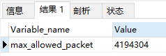

<!DOCTYPE html>


<html lang="zh-CN">
  

    <head>
      <meta charset="utf-8" />
        
      <meta
        name="viewport"
        content="width=device-width, initial-scale=1, maximum-scale=1"
      />
      <title>随笔-mysql |  时光荏苒</title>
  <meta name="generator" content="hexo-theme-ayer">
      
      <link rel="shortcut icon" href="/favicon.ico" />
       
<link rel="stylesheet" href="/dist/main.css">

      <link
        rel="stylesheet"
        href="https://cdn.jsdelivr.net/gh/Shen-Yu/cdn/css/remixicon.min.css"
      />
      
<link rel="stylesheet" href="/css/custom.css">
 
      <script src="https://cdn.jsdelivr.net/npm/pace-js@1.0.2/pace.min.js"></script>
       
 

      <link
        rel="stylesheet"
        href="https://cdn.jsdelivr.net/npm/@sweetalert2/theme-bulma@5.0.1/bulma.min.css"
      />
      <script src="https://cdn.jsdelivr.net/npm/sweetalert2@11.0.19/dist/sweetalert2.min.js"></script>

      <!-- mermaid -->
      
      <style>
        .swal2-styled.swal2-confirm {
          font-size: 1.6rem;
        }
      </style>
    <link rel="alternate" href="/atom.xml" title="时光荏苒" type="application/atom+xml">
</head>
  </html>
</html>


<body>
  <div id="app">
    
      
      <canvas width="1777" height="841"
        style="position: fixed; left: 0px; top: 0px; z-index: 99999; pointer-events: none;"></canvas>
      
    <main class="content on">
      <section class="outer">
  <article
  id="post-随笔-数据库"
  class="article article-type-post"
  itemscope
  itemprop="blogPost"
  data-scroll-reveal
>
  <div class="article-inner">
    
    <header class="article-header">
       
<h1 class="article-title sea-center" style="border-left:0" itemprop="name">
  随笔-mysql
</h1>
 

      
    </header>
     
    <div class="article-meta">
      <a href="/2021/09/30/%E9%9A%8F%E7%AC%94-%E6%95%B0%E6%8D%AE%E5%BA%93/" class="article-date">
  <time datetime="2021-09-30T01:35:55.000Z" itemprop="datePublished">2021-09-30</time>
</a> 
  <div class="article-category">
    <a class="article-category-link" href="/categories/%E9%9A%8F%E7%AC%94/">随笔</a>
  </div>
  
<div class="word_count">
    <span class="post-time">
        <span class="post-meta-item-icon">
            <i class="ri-quill-pen-line"></i>
            <span class="post-meta-item-text"> 字数统计:</span>
            <span class="post-count">1.5k</span>
        </span>
    </span>

    <span class="post-time">
        &nbsp; | &nbsp;
        <span class="post-meta-item-icon">
            <i class="ri-book-open-line"></i>
            <span class="post-meta-item-text"> 阅读时长≈</span>
            <span class="post-count">6 分钟</span>
        </span>
    </span>
</div>
 
    </div>
      
    <div class="tocbot"></div>


  
    <div class="article-entry" itemprop="articleBody">
       
  <h2 id="数据库操作"><a href="#数据库操作" class="headerlink" title="数据库操作"></a>数据库操作</h2><h3 id="导出"><a href="#导出" class="headerlink" title="导出"></a>导出</h3><figure class="highlight plaintext"><table><tr><td class="gutter"><pre><span class="line">1</span><br><span class="line">2</span><br></pre></td><td class="code"><pre><span class="line">mysqldump -h xxx.xxx.xxx.xxx -P 3306 -u root -p nethos_med --default-character-set=utf8 -R --disable-keys &gt; </span><br><span class="line">C:\nethos_med.sql</span><br></pre></td></tr></table></figure>
<p>-R 导出存储过程以及自定义函数<br><a target="_blank" rel="noopener" href="https://www.cnblogs.com/qq78292959/p/3637135.html">更多参数说明</a></p>
<h3 id="导入"><a href="#导入" class="headerlink" title="导入"></a>导入</h3><figure class="highlight plaintext"><table><tr><td class="gutter"><pre><span class="line">1</span><br></pre></td><td class="code"><pre><span class="line">mysql -h xxx.xxx.xxx.xxx -P3306 -uroot -p nethos_core  --default-character-set=utf8  &lt; /home/nethos_core.sql</span><br></pre></td></tr></table></figure>
<p>-f 遇到错误后继续</p>
<h3 id="查看存储过程和函数"><a href="#查看存储过程和函数" class="headerlink" title="查看存储过程和函数"></a>查看存储过程和函数</h3><p>查询数据库中的存储过程和函数</p>
<figure class="highlight shell"><table><tr><td class="gutter"><pre><span class="line">1</span><br><span class="line">2</span><br><span class="line">3</span><br><span class="line">4</span><br><span class="line">5</span><br></pre></td><td class="code"><pre><span class="line">select `name` from mysql.proc where db = &#x27;xx&#x27; and `type` = &#x27;PROCEDURE&#x27;   //存储过程</span><br><span class="line">select `name` from mysql.proc where db = &#x27;xx&#x27; and `type` = &#x27;FUNCTION&#x27;   //函数</span><br><span class="line"></span><br><span class="line">show procedure status; //存储过程</span><br><span class="line">show function status;     //函数</span><br></pre></td></tr></table></figure>
<p>查看视图和触发器</p>
<figure class="highlight shell"><table><tr><td class="gutter"><pre><span class="line">1</span><br><span class="line">2</span><br><span class="line">3</span><br><span class="line">4</span><br><span class="line">5</span><br></pre></td><td class="code"><pre><span class="line">SELECT * from information_schema.VIEWS   //视图</span><br><span class="line">SELECT * from information_schema.TABLES   //表</span><br><span class="line"></span><br><span class="line">SHOW TRIGGERS [FROM db_name] [LIKE expr]</span><br><span class="line">SELECT * FROM triggers T WHERE trigger_name=&quot;mytrigger&quot; \G</span><br></pre></td></tr></table></figure>
<h3 id="mysql复制表结构和内容到另外一张表"><a href="#mysql复制表结构和内容到另外一张表" class="headerlink" title="mysql复制表结构和内容到另外一张表"></a>mysql复制表结构和内容到另外一张表</h3><p><strong>复制表结构和数据</strong></p>
<figure class="highlight shell"><table><tr><td class="gutter"><pre><span class="line">1</span><br><span class="line">2</span><br></pre></td><td class="code"><pre><span class="line">create table 新表</span><br><span class="line">select * from 旧表  </span><br></pre></td></tr></table></figure>
<p><strong>只复制表结构</strong></p>
<figure class="highlight shell"><table><tr><td class="gutter"><pre><span class="line">1</span><br><span class="line">2</span><br></pre></td><td class="code"><pre><span class="line">create table 新表</span><br><span class="line">select * from 旧表 where 1=2</span><br></pre></td></tr></table></figure>
<p><strong>只复制表结构</strong></p>
<figure class="highlight shell"><table><tr><td class="gutter"><pre><span class="line">1</span><br></pre></td><td class="code"><pre><span class="line">create table 新表 like 旧表</span><br></pre></td></tr></table></figure>
<p><strong>复制旧表的数据到新表（假设两个表结构一样）</strong></p>
<figure class="highlight shell"><table><tr><td class="gutter"><pre><span class="line">1</span><br><span class="line">2</span><br></pre></td><td class="code"><pre><span class="line">insert into 新表</span><br><span class="line">select * from 旧表  </span><br></pre></td></tr></table></figure>
<p><strong>复制旧表的数据到新表（假设两个表结构不一样）</strong></p>
<figure class="highlight shell"><table><tr><td class="gutter"><pre><span class="line">1</span><br><span class="line">2</span><br></pre></td><td class="code"><pre><span class="line">insert into 新表(字段1,字段2,…….)</span><br><span class="line">select 字段1,字段2,…… from 旧表</span><br></pre></td></tr></table></figure>
<h3 id="查询字段有那些值"><a href="#查询字段有那些值" class="headerlink" title="查询字段有那些值"></a>查询字段有那些值</h3><p><code>select distinct first_name from table_user;</code></p>
<h3 id="添加order-by-null"><a href="#添加order-by-null" class="headerlink" title="添加order by null"></a>添加order by null</h3><p>作用: 在使用group by的时候会默认排序,order by null 会取消排序</p>
<h3 id="sql-将字段复制到另一个字段"><a href="#sql-将字段复制到另一个字段" class="headerlink" title="sql 将字段复制到另一个字段"></a>sql 将字段复制到另一个字段</h3><p><code>update table  set  test2  =  test1</code></p>
<h2 id="数据库报错"><a href="#数据库报错" class="headerlink" title="数据库报错"></a>数据库报错</h2><h3 id="mysql-1055"><a href="#mysql-1055" class="headerlink" title="mysql 1055"></a>mysql 1055</h3><p>mysql版本导致默认配置修改,ONLY_FULL_GROUP_BY：对于GROUP BY聚合操作，若select中的列没有在group by中出现，那么这句SQL是不合法的。<br>修改mysql配置(windows安装路径,Linux/etc/mysql)<br><code>sql_mode=STRICT_TRANS_TABLES,NO_ZERO_IN_DATE,NO_ZERO_DATE,ERROR_FOR_DIVISION_BY_ZERO,NO_ENGINE_SUBSTITUTION</code><br>sql_mode常用值</p>
<ul>
<li>ONLY_FULL_GROUP_BY<figure class="highlight plaintext"><table><tr><td class="gutter"><pre><span class="line">1</span><br><span class="line">2</span><br></pre></td><td class="code"><pre><span class="line">对于GROUP BY聚合操作，如果在SELECT中的列，没有在GROUP BY中出现，那么这个SQL是不合法的，因为列不在GROUP BY从句中。</span><br><span class="line">在严格模式下，不要让GROUP BY部分中的查询指向未选择的列，否则报错。</span><br></pre></td></tr></table></figure></li>
<li>NO_AUTO_VALUE_ON_ZERO<figure class="highlight plaintext"><table><tr><td class="gutter"><pre><span class="line">1</span><br></pre></td><td class="code"><pre><span class="line">该值影响自增长列的插入。默认设置下，插入0或NULL代表生成下一个自增长值。如果用户 希望插入的值为0，而该列又是自增长的，那么这个选项就有用了。</span><br></pre></td></tr></table></figure></li>
<li>STRICT_TRANS_TABLES<figure class="highlight plaintext"><table><tr><td class="gutter"><pre><span class="line">1</span><br></pre></td><td class="code"><pre><span class="line">在该模式下，如果一个值不能插入到一个事务表中，则中断当前的操作，对非事务表不做限制</span><br></pre></td></tr></table></figure></li>
<li>NO_ZERO_IN_DATE<figure class="highlight plaintext"><table><tr><td class="gutter"><pre><span class="line">1</span><br></pre></td><td class="code"><pre><span class="line">在严格模式下，不允许日期和月份为零</span><br></pre></td></tr></table></figure></li>
<li>NO_ZERO_DATE<figure class="highlight plaintext"><table><tr><td class="gutter"><pre><span class="line">1</span><br></pre></td><td class="code"><pre><span class="line">设置该值，mysql数据库不允许插入零日期，插入零日期会抛出错误而不是警告。</span><br></pre></td></tr></table></figure></li>
<li>ERROR_FOR_DIVISION_BY_ZERO<figure class="highlight plaintext"><table><tr><td class="gutter"><pre><span class="line">1</span><br></pre></td><td class="code"><pre><span class="line">在INSERT或UPDATE过程中，如果数据被零除，则产生错误而非警告。如 果未给出该模式，那么数据被零除时MySQL返回NULL</span><br></pre></td></tr></table></figure></li>
<li>NO_AUTO_CREATE_USER<figure class="highlight plaintext"><table><tr><td class="gutter"><pre><span class="line">1</span><br></pre></td><td class="code"><pre><span class="line">禁止GRANT创建密码为空的用户</span><br></pre></td></tr></table></figure></li>
<li>NO_ENGINE_SUBSTITUTION<figure class="highlight plaintext"><table><tr><td class="gutter"><pre><span class="line">1</span><br></pre></td><td class="code"><pre><span class="line">如果需要的存储引擎被禁用或未编译，那么抛出错误。不设置此值时，用默认的存储引擎替代，并抛出一个异常</span><br></pre></td></tr></table></figure></li>
<li>PIPES_AS_CONCAT<figure class="highlight plaintext"><table><tr><td class="gutter"><pre><span class="line">1</span><br></pre></td><td class="code"><pre><span class="line">将&quot;||&quot;视为字符串的连接操作符而非或运算符，这和Oracle数据库是一样的，也和字符串的拼接函数Concat相类似</span><br></pre></td></tr></table></figure></li>
<li>ANSI_QUOTES<figure class="highlight plaintext"><table><tr><td class="gutter"><pre><span class="line">1</span><br><span class="line">2</span><br></pre></td><td class="code"><pre><span class="line">启用ANSI_QUOTES后，不能用双引号来引用字符串，因为它被解释为识别符；</span><br><span class="line">ORACLE的sql_mode设置等同：PIPES_AS_CONCAT, ANSI_QUOTES, IGNORE_SPACE, NO_KEY_OPTIONS, NO_TABLE_OPTIONS, NO_FIELD_OPTIONS, NO_AUTO_CREATE_USER.</span><br></pre></td></tr></table></figure>
<h3 id="MySQL-server-has-gone-away"><a href="#MySQL-server-has-gone-away" class="headerlink" title="MySQL server has gone away"></a>MySQL server has gone away</h3>问题再现：mysql导入大文件报错<br>出现原因：Mysql配置项max_allowed_packet过小<br>问题解析：max_allowed_packet项控制mysql服务端接收的包的大小<br>问题解决：<br>查看max_allowed_packet<br><code>show global variables like &#39;max_allowed_packet&#39;;</code><br><br>将默认值修改为150M<br><code>set global max_allowed_packet=157286400;</code><br>注意：修改旨在当前设置中生效，重启mysql后恢复默认值，永久生效可以通过my.cnf中添加<code>max_allowed_packet=150M</code>即可<h2 id="mysql解析过程"><a href="#mysql解析过程" class="headerlink" title="mysql解析过程"></a>mysql解析过程</h2><a target="_blank" rel="noopener" href="https://zhuanlan.zhihu.com/p/354255965">参考1</a><br><a target="_blank" rel="noopener" href="https://www.cnblogs.com/fanguangdexiaoyuer/p/10268570.html">参考2</a><br><a target="_blank" rel="noopener" href="https://www.php.cn/mysql-tutorials-483021.html">参考3</a><blockquote>
<p>最宏观的来看，一个系统分为JAVA端和MYSQL端<br>看作<code>JAVA-&gt;MYSQL</code></p>
<p>但连接数据库的操作往往都是固定的，于是有人封装这些代码，称之为数据库驱动<br>这时<code>JAVA业务-&gt;MYSQL驱动-&gt;MYSQL</code></p>
<p>在向MYSQL发送请求的时候，如果每次都新建，删除连接，会造成性能的浪费和下降，通常会提供固定数量连接的线程，数据库连接池<br>现在<code>JAVA业务-&gt;数据库连接池-&gt;MYSQL驱动-&gt;MYSQL</code></p>
<p>同理，MYSQL接收发送请求的线程也是一个连接池<br><code>JAVA业务-&gt;数据库发送池-&gt;MYSQL驱动-&gt;数据库接收池-&gt;MYSQL</code></p>
<p>在进入MYSQL服务之后，如果查询缓存是打开的(默认关闭)，mysql会优先检查查询是否命中缓存，通过一个对大小写敏感的哈希查找实现</p>
<ul>
<li>只要有一个表的更新，缓存清空</li>
<li>SQL上任何字符不同，例如空格，注释，缓存都不会命中<br><code>JAVA业务-&gt;数据库发送池-&gt;MYSQL驱动-&gt;数据库接收池-&gt;查询缓存-&gt;</code></li>
</ul>
<p>之后MYSQL对传递过来的SQL语句进行解析，和检查<br>词法解析：将完整的SQL语句打散成单词 语法分析：引号有没有闭合 语义分析：表名和字段是否存在<br><code>JAVA业务-&gt;数据库发送池-&gt;MYSQL驱动-&gt;数据库接收池-&gt;查询缓存-&gt;解析器-&gt;</code></p>
<p>解析过后，会由优化器将解析之后的语法树转化成执行计划，查询优化器找到最好的执行计划，通过存储引擎执行并返回结果<br>使用EXPlain可以看到执行计划的信息<br><code>JAVA业务-&gt;数据库发送池-&gt;MYSQL驱动-&gt;数据库接收池-&gt;查询缓存-&gt;解析器-&gt;查询优化-&gt;存储引擎(执行器)</code></p>
</blockquote>
</li>
</ul>
<h2 id="MyCat-Limit操作"><a href="#MyCat-Limit操作" class="headerlink" title="MyCat Limit操作"></a>MyCat Limit操作</h2><ul>
<li>无offset 无order by<br>取决于哪个节点先返回数据(同一个SQL会有不同的结果)</li>
<li>无offset 有order by<br>对每个节点返回的数据进行最小堆计算，计算所有结果的最小记录返回给应用</li>
<li>有offset，有order by<br>limit m,n 会被改写为limit 0,m+n 对性能的消耗大幅度增加</li>
</ul>
 
      <!-- reward -->
      
      <div id="reword-out">
        <div id="reward-btn">
          打赏
        </div>
      </div>
      
    </div>
    

    <!-- copyright -->
    
    <div class="declare">
      <ul class="post-copyright">
        <li>
          <i class="ri-copyright-line"></i>
          <strong>版权声明： </strong>
          
          本博客所有文章除特别声明外，著作权归作者所有。转载请注明出处！
          
        </li>
      </ul>
    </div>
    
    <footer class="article-footer">
       
<div class="share-btn">
      <span class="share-sns share-outer">
        <i class="ri-share-forward-line"></i>
        分享
      </span>
      <div class="share-wrap">
        <i class="arrow"></i>
        <div class="share-icons">
          
          <a class="weibo share-sns" href="javascript:;" data-type="weibo">
            <i class="ri-weibo-fill"></i>
          </a>
          <a class="weixin share-sns wxFab" href="javascript:;" data-type="weixin">
            <i class="ri-wechat-fill"></i>
          </a>
          <a class="qq share-sns" href="javascript:;" data-type="qq">
            <i class="ri-qq-fill"></i>
          </a>
          <a class="douban share-sns" href="javascript:;" data-type="douban">
            <i class="ri-douban-line"></i>
          </a>
          <!-- <a class="qzone share-sns" href="javascript:;" data-type="qzone">
            <i class="icon icon-qzone"></i>
          </a> -->
          
          <a class="facebook share-sns" href="javascript:;" data-type="facebook">
            <i class="ri-facebook-circle-fill"></i>
          </a>
          <a class="twitter share-sns" href="javascript:;" data-type="twitter">
            <i class="ri-twitter-fill"></i>
          </a>
          <a class="google share-sns" href="javascript:;" data-type="google">
            <i class="ri-google-fill"></i>
          </a>
        </div>
      </div>
</div>

<div class="wx-share-modal">
    <a class="modal-close" href="javascript:;"><i class="ri-close-circle-line"></i></a>
    <p>扫一扫，分享到微信</p>
    <div class="wx-qrcode">
      
    </div>
</div>

<div id="share-mask"></div>  
  <ul class="article-tag-list" itemprop="keywords"><li class="article-tag-list-item"><a class="article-tag-list-link" href="/tags/mysql/" rel="tag">mysql</a></li></ul>

    </footer>
  </div>

   
  <nav class="article-nav">
    
      <a href="/2021/10/18/mycat%E5%85%A5%E9%97%A8-3/" class="article-nav-link">
        <strong class="article-nav-caption">上一篇</strong>
        <div class="article-nav-title">
          
            mycat入门-安装
          
        </div>
      </a>
    
    
      <a href="/2021/09/26/mybatis-1/" class="article-nav-link">
        <strong class="article-nav-caption">下一篇</strong>
        <div class="article-nav-title">mybatis-SQL注入</div>
      </a>
    
  </nav>

   
<!-- valine评论 -->
<div id="vcomments-box">
  <div id="vcomments"></div>
</div>
<script src="//cdn1.lncld.net/static/js/3.0.4/av-min.js"></script>
<script src="https://cdn.jsdelivr.net/npm/valine@1.4.14/dist/Valine.min.js"></script>
<script>
  new Valine({
    el: "#vcomments",
    app_id: "GarVmH7U8tdNPtBDdKd9UljM-gzGzoHsz",
    app_key: "EjHY36rd6I40oLq85Dy3FAFi",
    path: window.location.pathname,
    avatar: "monsterid",
    placeholder: "给我的文章加点评论吧~",
    recordIP: true,
  });
  const infoEle = document.querySelector("#vcomments .info");
  if (infoEle && infoEle.childNodes && infoEle.childNodes.length > 0) {
    infoEle.childNodes.forEach(function (item) {
      item.parentNode.removeChild(item);
    });
  }
</script>
<style>
  #vcomments-box {
    padding: 5px 30px;
  }

  @media screen and (max-width: 800px) {
    #vcomments-box {
      padding: 5px 0px;
    }
  }

  #vcomments-box #vcomments {
    background-color: #fff;
  }

  .v .vlist .vcard .vh {
    padding-right: 20px;
  }

  .v .vlist .vcard {
    padding-left: 10px;
  }
</style>

 
   
     
</article>

</section>
      <footer class="footer">
  <div class="outer">
    <ul>
      <li>
        Copyrights &copy;
        2021
        <i class="ri-heart-fill heart_icon"></i> Htr
      </li>
    </ul>
    <ul>
      <li>
        
      </li>
    </ul>
    <ul>
      <li>
        
        
        <span>
  <span><i class="ri-user-3-fill"></i>访问人数:<span id="busuanzi_value_site_uv"></span></span>
  <span class="division">|</span>
  <span><i class="ri-eye-fill"></i>浏览次数:<span id="busuanzi_value_page_pv"></span></span>
</span>
        
      </li>
    </ul>
    <ul>
      
    </ul>
    <ul>
      
    </ul>
    <ul>
      <li>
        <!-- cnzz统计 -->
        
      </li>
    </ul>
  </div>
</footer>    
    </main>
    <div class="float_btns">
      <div class="totop" id="totop">
  <i class="ri-arrow-up-line"></i>
</div>

<div class="todark" id="todark">
  <i class="ri-moon-line"></i>
</div>

    </div>
    <aside class="sidebar on">
      <button class="navbar-toggle"></button>
<nav class="navbar">
  
  <div class="logo">
    <a href="/"></a>
  </div>
  
  <ul class="nav nav-main">
    
    <li class="nav-item">
      <a class="nav-item-link" href="/">主页</a>
    </li>
    
    <li class="nav-item">
      <a class="nav-item-link" href="/archives">归档</a>
    </li>
    
    <li class="nav-item">
      <a class="nav-item-link" href="/categories">分类</a>
    </li>
    
    <li class="nav-item">
      <a class="nav-item-link" href="/tags">标签</a>
    </li>
    
    <li class="nav-item">
      <a class="nav-item-link" href="/friends">友链</a>
    </li>
    
    <li class="nav-item">
      <a class="nav-item-link" href="/about">关于我</a>
    </li>
    
  </ul>
</nav>
<nav class="navbar navbar-bottom">
  <ul class="nav">
    <li class="nav-item">
      
      <a class="nav-item-link nav-item-search"  title="搜索">
        <i class="ri-search-line"></i>
      </a>
      
      
      <a class="nav-item-link" target="_blank" href="/atom.xml" title="RSS Feed">
        <i class="ri-rss-line"></i>
      </a>
      
    </li>
  </ul>
</nav>
<div class="search-form-wrap">
  <div class="local-search local-search-plugin">
  <input type="search" id="local-search-input" class="local-search-input" placeholder="Search...">
  <div id="local-search-result" class="local-search-result"></div>
</div>
</div>
    </aside>
    <div id="mask"></div>

<!-- #reward -->
<div id="reward">
  <span class="close"><i class="ri-close-line"></i></span>
  <p class="reward-p"><i class="ri-cup-line"></i>请我喝杯咖啡吧~</p>
  <div class="reward-box">
    
    <div class="reward-item">
      
      <span class="reward-type">支付宝</span>
    </div>
    
    
    <div class="reward-item">
      
      <span class="reward-type">微信</span>
    </div>
    
  </div>
</div>
    
<script src="/js/jquery-3.6.0.min.js"></script>
 
<script src="/js/lazyload.min.js"></script>

<!-- Tocbot -->
 
<script src="/js/tocbot.min.js"></script>

<script>
  tocbot.init({
    tocSelector: ".tocbot",
    contentSelector: ".article-entry",
    headingSelector: "h1, h2, h3, h4, h5, h6",
    hasInnerContainers: true,
    scrollSmooth: true,
    scrollContainer: "main",
    positionFixedSelector: ".tocbot",
    positionFixedClass: "is-position-fixed",
    fixedSidebarOffset: "auto",
  });
</script>

<script src="https://cdn.jsdelivr.net/npm/jquery-modal@0.9.2/jquery.modal.min.js"></script>
<link
  rel="stylesheet"
  href="https://cdn.jsdelivr.net/npm/jquery-modal@0.9.2/jquery.modal.min.css"
/>
<script src="https://cdn.jsdelivr.net/npm/justifiedGallery@3.7.0/dist/js/jquery.justifiedGallery.min.js"></script>

<script src="/dist/main.js"></script>

<!-- ImageViewer -->
 <!-- Root element of PhotoSwipe. Must have class pswp. -->
<div class="pswp" tabindex="-1" role="dialog" aria-hidden="true">

    <!-- Background of PhotoSwipe. 
         It's a separate element as animating opacity is faster than rgba(). -->
    <div class="pswp__bg"></div>

    <!-- Slides wrapper with overflow:hidden. -->
    <div class="pswp__scroll-wrap">

        <!-- Container that holds slides. 
            PhotoSwipe keeps only 3 of them in the DOM to save memory.
            Don't modify these 3 pswp__item elements, data is added later on. -->
        <div class="pswp__container">
            <div class="pswp__item"></div>
            <div class="pswp__item"></div>
            <div class="pswp__item"></div>
        </div>

        <!-- Default (PhotoSwipeUI_Default) interface on top of sliding area. Can be changed. -->
        <div class="pswp__ui pswp__ui--hidden">

            <div class="pswp__top-bar">

                <!--  Controls are self-explanatory. Order can be changed. -->

                <div class="pswp__counter"></div>

                <button class="pswp__button pswp__button--close" title="Close (Esc)"></button>

                <button class="pswp__button pswp__button--share" style="display:none" title="Share"></button>

                <button class="pswp__button pswp__button--fs" title="Toggle fullscreen"></button>

                <button class="pswp__button pswp__button--zoom" title="Zoom in/out"></button>

                <!-- Preloader demo http://codepen.io/dimsemenov/pen/yyBWoR -->
                <!-- element will get class pswp__preloader--active when preloader is running -->
                <div class="pswp__preloader">
                    <div class="pswp__preloader__icn">
                        <div class="pswp__preloader__cut">
                            <div class="pswp__preloader__donut"></div>
                        </div>
                    </div>
                </div>
            </div>

            <div class="pswp__share-modal pswp__share-modal--hidden pswp__single-tap">
                <div class="pswp__share-tooltip"></div>
            </div>

            <button class="pswp__button pswp__button--arrow--left" title="Previous (arrow left)">
            </button>

            <button class="pswp__button pswp__button--arrow--right" title="Next (arrow right)">
            </button>

            <div class="pswp__caption">
                <div class="pswp__caption__center"></div>
            </div>

        </div>

    </div>

</div>

<link rel="stylesheet" href="https://cdn.jsdelivr.net/npm/photoswipe@4.1.3/dist/photoswipe.min.css">
<link rel="stylesheet" href="https://cdn.jsdelivr.net/npm/photoswipe@4.1.3/dist/default-skin/default-skin.min.css">
<script src="https://cdn.jsdelivr.net/npm/photoswipe@4.1.3/dist/photoswipe.min.js"></script>
<script src="https://cdn.jsdelivr.net/npm/photoswipe@4.1.3/dist/photoswipe-ui-default.min.js"></script>

<script>
    function viewer_init() {
        let pswpElement = document.querySelectorAll('.pswp')[0];
        let $imgArr = document.querySelectorAll(('.article-entry img:not(.reward-img)'))

        $imgArr.forEach(($em, i) => {
            $em.onclick = () => {
                // slider展开状态
                // todo: 这样不好，后面改成状态
                if (document.querySelector('.left-col.show')) return
                let items = []
                $imgArr.forEach(($em2, i2) => {
                    let img = $em2.getAttribute('data-idx', i2)
                    let src = $em2.getAttribute('data-target') || $em2.getAttribute('src')
                    let title = $em2.getAttribute('alt')
                    // 获得原图尺寸
                    const image = new Image()
                    image.src = src
                    items.push({
                        src: src,
                        w: image.width || $em2.width,
                        h: image.height || $em2.height,
                        title: title
                    })
                })
                var gallery = new PhotoSwipe(pswpElement, PhotoSwipeUI_Default, items, {
                    index: parseInt(i)
                });
                gallery.init()
            }
        })
    }
    viewer_init()
</script> 
<!-- MathJax -->

<!-- Katex -->

<!-- busuanzi  -->
 
<script src="/js/busuanzi-2.3.pure.min.js"></script>
 
<!-- ClickLove -->

<!-- ClickBoom1 -->

<!-- ClickBoom2 -->
 
<script src="/js/clickBoom2.js"></script>
 
<!-- CodeCopy -->
 
<link rel="stylesheet" href="/css/clipboard.css">
 <script src="https://cdn.jsdelivr.net/npm/clipboard@2/dist/clipboard.min.js"></script>
<script>
  function wait(callback, seconds) {
    var timelag = null;
    timelag = window.setTimeout(callback, seconds);
  }
  !function (e, t, a) {
    var initCopyCode = function(){
      var copyHtml = '';
      copyHtml += '<button class="btn-copy" data-clipboard-snippet="">';
      copyHtml += '<i class="ri-file-copy-2-line"></i><span>COPY</span>';
      copyHtml += '</button>';
      $(".highlight .code pre").before(copyHtml);
      $(".article pre code").before(copyHtml);
      var clipboard = new ClipboardJS('.btn-copy', {
        target: function(trigger) {
          return trigger.nextElementSibling;
        }
      });
      clipboard.on('success', function(e) {
        let $btn = $(e.trigger);
        $btn.addClass('copied');
        let $icon = $($btn.find('i'));
        $icon.removeClass('ri-file-copy-2-line');
        $icon.addClass('ri-checkbox-circle-line');
        let $span = $($btn.find('span'));
        $span[0].innerText = 'COPIED';
        
        wait(function () { // 等待两秒钟后恢复
          $icon.removeClass('ri-checkbox-circle-line');
          $icon.addClass('ri-file-copy-2-line');
          $span[0].innerText = 'COPY';
        }, 2000);
      });
      clipboard.on('error', function(e) {
        e.clearSelection();
        let $btn = $(e.trigger);
        $btn.addClass('copy-failed');
        let $icon = $($btn.find('i'));
        $icon.removeClass('ri-file-copy-2-line');
        $icon.addClass('ri-time-line');
        let $span = $($btn.find('span'));
        $span[0].innerText = 'COPY FAILED';
        
        wait(function () { // 等待两秒钟后恢复
          $icon.removeClass('ri-time-line');
          $icon.addClass('ri-file-copy-2-line');
          $span[0].innerText = 'COPY';
        }, 2000);
      });
    }
    initCopyCode();
  }(window, document);
</script>
 
<!-- CanvasBackground -->

<script>
  if (window.mermaid) {
    mermaid.initialize({ theme: "forest" });
  }
</script>


    
    

  </div>
</body>

</html>